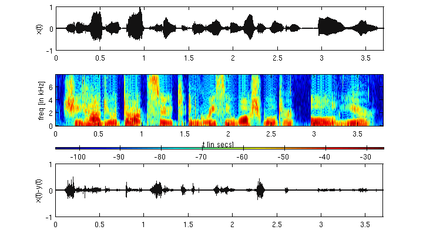

Proposed Approach
Signal representation is a classic problem in signal processing. A beautiful approach has been using sinusoidal functions (example Fourier series)
as othogonal and complete basis for periodic signal representations. The approach is beautiful because very often this representation makes
physical sense. Broadening the domain of 'kinds of signals', natural signals such as speech are non-stationary.
This is because the attributes of the underlying signal generator are time-varying (example, vocal tract length varies as we speak).
The Fourier series (and other periodic series) approach are unable to model this time-varyingness, and fail to serve as a physically
meaningful representation of the signal.
An alternative widely adopted is the short-time analysis of non-stationary signals. It is assumed that in each short-time frame
the signal is stationary. Thus, the Fourier series representation in each frame begins to make sense.
Celebrated techniques, output of such an approach, include spectrogram (or STFT), and linear prediction coding (LPC).
We propose an alternate short-time representation of speech based on Chebyshev polynomial basis.
Why Chebsyshev polynomial basis? They are orthogonal (in [-1,1]), oscillatory, and have several nice properties for function approximation.
To know click here.
Further as representations, they are particularly suited for non-periodic boundary conditions, have no Runge phenomenon
in interploation, and give a least squares approximation close to minimax one in the class of polynomials (like, Vandermode, Legendre,
Hermite, cardinal series, ...).
Steps
- Take speech signal (sampled at Fs) .
- Make wmsec duration short-time segments (non-overlapping, let nos. be M) .
- Set order of polynomial representation to N (or degree N). Obtain the roots grid samples in each segment via sinc interpolation. Root grid sampling instants are non-unifromly spaced and are defined by the roots of the N-th Chebyshev basis (in the interval [-1,1]).
- Do a least-squares fitting of the segment using Chebyshev basis and roots grid samples. Store the N+1 Chebsyshev basis coefficients thus obtained in each of the M segments into a matrix.
- The matrix, let it be named C, thus obatained is the short-time Chebyshev transform of the signal.
- Given C, the trasnform is invertible and thus can serve as a useful representation.
Example: [from top to bottom] the figure below illustrates a signal, its abs(C) matrix, and its spectrogram. Here, Fs = 16k samples/sec, wmsec = 2.5 msec, and N = 17. The signal is a femake speech signal taken from TIMIT dataset.
From the above figure we can note that,
- each 40 samples (= 2.5msec x Fs) segment is represented with a 17 (= N+1) dimensional vector.
- the represenation can be inverted, that is we have $$x(t)\rightarrow C \rightarrow y(t)$$.
- higher basis elements are active usually for fricative regions in speech.
- lower basis elements are active usually for voiced regions in speech.
[Original Signal, x(t)]
[Fs = 16000 sample/sec][Reconstructed, y(t)]
[wmsec = 2.5 msec, and N = 17] So,y(t) is intelligible but has perceivable distortion. Below we plot the error signal (bottom plot below the spectrogram).

The distortion is particularly high in fricative portions.
This is due to poor fitting of the polynomial to the waveform with N = 17 to fast signal variations. Below figure shows a least squares fit in a segment.
It can be observed that the fast variations are not fit well.
Analysis
The proposed representation can be analyzed for - how the speech is encoded in the basis coefficients?.
Example: We consider 240 secs of speech of two speakers (male and female) sampled at Fs =- 48000 samples/sec. The signals is represented with the proposed
approach taking N = 37 order Chebyshev polynomial.
Using a higher order improves the quality of reconstruction as can be heard in the sound samples snippets.
[Original Signal, x(t)]
[Fs = 48000 samples/sec][Reconstructed Signal, x(t)]
[Fs = 48000 samples/sec] Below we show some simple statistics related to each of the 37 coeffients.Chebsyshev coefficients energy distribution:
Chebsyshev coefficients amplitude distribution:
Chebsyshev coefficients average amplitude and standard deviation:
Quantization
Here, we try quantizing the representation. The Chebyshev coefficients amplitude distribution shows that most of the amplitudes have a small dynamic range and peak at zero. None of the coefficient has a PDF for amplitude ditribution as uniform. Nevertheless, quantizing with a uniform quantizer at 4 bits-per-coeffcient we get the below reconstrcuted signal.
[Reconstructed Signal, y(t)]
[Fs = 48000 samples/sec, 4 bits-per-coeffcient]It is evident that uniform quantization is not the right choice. We pre-process the coefficients amplitudes using a mu-law companding. The mu-law companding for increasing value of mu is shown below. The linear curve is for mu=0 that is no companding. Next, below we show the PDF (apprximated using histogram) of amplitude distribution after a mu-law companding with mu = 1024 is shown below. The signal is the same 240 sec duratiom of speech analysed earlier. The ditribution is less peakier now. The resulting quantized signal after making use this companding (at 4 bits per coeffcient) can be heard below.
[Reconstructed Signal, y(t)]
[Fs = 48000 samples/sec, 4 bits-per-coeffcient] [Fs = 48000 samples/sec, 5 bits-per-coeffcient] [Fs = 48000 samples/sec, 6 bits-per-coeffcient] [Fs = 48000 samples/sec, 7 bits-per-coeffcient] [Fs = 48000 samples/sec, No quantization.]Elements
Here, we try to understand the perceptual importance of each basis element. On comparing the short-time Chebyshev representation with spectrogram (on same time-scale, example go back to see the first figure) it is evident that lower basis elements encode vowel features and higher basis elements encode fricative features in speech. However, speech is not just vowel and fricatives but also contains perceivable attributes such as pitch, emotion, speaker information, etc. Below we present some sound files representing the individual elements of the 37 dimenisional representation of a speech file.
[Reconstructed from individial basis elements, y(t)]
[Fs = 48000 samples/sec, Only basis element 1][Fs = 48000 samples/sec, Only Basis element 5]
[Fs = 48000 samples/sec, Only Basis element 10]
[Fs = 48000 samples/sec, Only Basis element 15]
[Fs = 48000 samples/sec, Only Basis element 20]
[Fs = 48000 samples/sec, All basis elements]
Seems like the individial elements don't sound intelligible but do encode some perceivable correlated information to the original audio signal. Next, we incrementally add basis elements (1 to n1) and listen to them. Below are the sounds.
[Incremental addition of basis elements, y(t)]
[Fs = 48000 samples/sec, Basis element 1 to 1][Fs = 48000 samples/sec, Basis elements 1 to 2]
[Fs = 48000 samples/sec, Basis elements 1 to 5]
[Fs = 48000 samples/sec, Basis elements 1 to 10]
[Fs = 48000 samples/sec, Basis elements 1 to 15]
[Fs = 48000 samples/sec, Basis elements 1 to 20]
[Fs = 48000 samples/sec, Basis elements 1 to 30]
[Fs = 48000 samples/sec, Basis elements 1 to 37 (or all elements)] As expected, the intelligible improves with incremental addition of elements. The improvement saturates after 25 to 30 elements. Below we show the spectrogram (with window length = 1024, Fs = 48k) for first 1 to 2, 5, 10, 15, 30 basis elements, and the original (top to bottom in order). It can be observed that the signal harmonics (and harmonics due to basis) get added as we increase the order. Also, the glides in the harmonics start appearing as basis elements get added. Below we show the wideband spectrogram (with window length = 256, Fs = 48k) for first 1 to 2, 5, 10, 15, 30 basis elements, and the original (top to bottom in order). The formant structure appears as basis elements go to 30. Further the transient lipsmack is preserved with 15 basis elements as well. On listening, we observe that the speaker information seem to be absent in the first few basis addition, and enters after close to 15 elements have been added. In summary, some observations follow-up below.
- information is distributed unevenly amongst the basis elements.
- sparsity can potentially be exploited.
Scale time
Here, we scale the time domain in the obtained representation.
That is, y(t) = x(pt), where 'p' is the scale factor.
This operation is analogous to playing the signal x(t=n x Ts) at x(t=n x pTs).
While arbitrary 'p' can be choosen in a DSP simulation but this is not a practical option as sound cards don't support any arbitrary clock rate.
Instead, scaling the time axis of x(t) keeping Ts fixed seems more practical.
Scaling time axis can be done via sinc interpolation for a bandlimited signal. But speech (and audio signal in general) is only locally bandlimited.
Hence, the slow decay of sinc kernel is non-optimal when it comes to time-scaling of non-stationary signals such as speech.
We make use of the proposed representation for this.
That is, to scale time by 'p' we have for each 2.5 msec of the signal,
$$y(t)=x(pt)=\displaystyle\sum_{k=0}^{N}a_kT_k(pt).$$
Below are the audio signals obtained using above formulation on different scale factors.
[Fs = 48000 samples/sec, p = 0.50]
[Fs = 48000 samples/sec, p = 0.75]
[Fs = 48000 samples/sec, p = 0.85]
[Fs = 48000 samples/sec, No scaling (original audio)]
[Fs = 48000 samples/sec, p = 1.15]
[Fs = 48000 samples/sec, p = 1.25]
[Fs = 48000 samples/sec, p = 1.50]
[Fs = 48000 samples/sec, p = 2.00]
It can be perceived, as also should be expected, that the pitch is not preserved.
Dictionary
Here, we learn a dictionary using the proposed representation. Let the STCT (short-time Chebyshev represenation) matrix be denoted by C (obtained with 2.5 msec segment size). Dictionary learning involves decomposition of C into product of two matrices D and A such that, $$\|C-DA\|_p$$ is minimum. Now, there can be many possibilities for D and A. To make the decomposition useful one option is to enforce sparsity in the columns of A. This will allow D to serve as a pruned sub-space for columns of C. A common set-up used is, $$\arg\min_{D,A}\|C-DA\|_2 \ \mbox{s.t. }\|A\|_{0}\leq K\ .$$ Here, D serves as a dictionary to encode C via A. Important parameters are sparsity factor (K), and the dimensions of the matrices. That is, $$C_{n\times m},\ D_{n\times q},\mbox{and}\ A_{q\times m}.$$ We will use a 36th order Chebyshev basis represenation, hence n is fixed to 37. Given an audio file, m depends on number of 2.5 msec segments. To learn the dictionary we can play with the parameters q and K.
- q>n implies an overcomplete dictionary. This will allow promoting sparsity in columns of A.
- K << q will allow for obtaining sparse representation.
- above two condition make dictionary learning a difficult problem. Iterative approaches have been proposed to circumvent the problems. K-SVD is one such approach which we will use below to learn our dictionary from the STCT representations.
encoding the representation of unseen speech of same speaker:
We will learn a dictionary D for a speaker (using approx. 12 secs of speech), and use D as a basis to encode the STCT representation of an unseen utterance from the same speaker. In the dictionary learning step we have, $$\arg\min_{D_1,A_1}\|C_1-D_1A_1\|_2 \ \mbox{s.t. }\|A_1\|_{0}\leq K\ .$$ We try with K = 3, and set q to 200. That is, $$C_{1, 37\times 7568},\ D_{1,37\times 200},\mbox{and}\ A_{1,200\times 7568},\mbox{with } K = 3.$$ Below is a color representation of the learnt decomposition using k-SVD based dictionary learning for K = 3. We use 10 iterations of the algorithm. The root mean square error (in Frobenius norm) in approximating C1 using D1 and A1 over the 10 iterations is shown below. Next we use D1 to encode an unseen utterance of the same speaker. That is, let C be the STCT of the utterance. Then we find A such that, $$\arg\min_{A}\|C-D_1A\|_2,\ \mbox{s.t. } \|A\|_{0}\leq s.$$ The above can be solved using orthogonal matching pursuit (OMP, a sparse representation algorithm). Let the approximated representation of C thus obtained be denoted by Ca=D1A. Using Ca we reconstruct the uttered signal (via inverting the STCT). Below we present the sound signals (original and reconstructed). The speech signal is a TIMIT sentence not used during dictionary learning. The dictionary was learnt for K = 3. The encoding of the unseen signal is done with s = 1, 5, 10, and 15.[Fs = 48000 samples/sec, Original]
[Fs = 48000 samples/sec, K = 3, s = 1]
[Fs = 48000 samples/sec, K = 3, s = 5]
[Fs = 48000 samples/sec, K = 3, s = 10]
[Fs = 48000 samples/sec, K = 3, s = 15]
The inteligibility is preserved to little extent even with s=1, and the quaility improves as we descrease the sparsity for reconstruction using the the dictionary (that is increasing s).
encoding the representation of solo music instruments using speech dictionary:
We used the above learnt dictionary, that is C1, to represent solo music instruments. Below are the signals.[Fs = 48000 samples/sec, Original Flute]
[Fs = 48000 samples/sec, K = 3, s = 15]
[Fs = 48000 samples/sec, Original Mari]
[Fs = 48000 samples/sec, K = 3, s = 15]
[Fs = 48000 samples/sec, Original Oboe]
[Fs = 48000 samples/sec, K = 3, s = 15]
[Fs = 48000 samples/sec, Original Picc]
[Fs = 48000 samples/sec, K = 3, s = 15]
[Fs = 48000 samples/sec, Original Trumphet]
[Fs = 48000 samples/sec, K = 3, s = 15]
Here, we have used s = 15 (note that s = 15 was sufficient for encoding same speaker speech very well, but we can make out the difference when it represents the music instruments for the same s). It is interesting to note that the solo instruments with rich spectrum above 5 kHz (trumphet) are reconstructed not that well as others (flute, mari) Below we show the spectrogram (N = 1024, Fs = 48k) for trumphet signal (original and reconstructed (above)). Clearly, the high frequency content is not represented well.

Discriminability using Dictionary
Here, we intend to use the dictionary learnt using STCT representation as discriminable features across sound sources. Consider, D1 and D2 as dictionaries created from STCT represenations belonging to two different sound sources, respectively. Example D1 pertains to speaker 1 (spk-1), and D2 pertains to speaker 2 (spk-2). Now, given a test sound signal composed of a mix of speech of spk-1 and spk-2, we intend to reconstruct it using [D1 D2]. That is let the STCT representation of the test signal be C. Then, we solve for: $$ \arg\min_{A_1,A_2} \|[A_1\ A_2]^{\intercal}\| _{0}\ \mbox{s.t. } \| C -[D_1\ D_2] [A_1\ A_2]^{\intercal}\|_2\leq err$$ $$ \hat{C}_{1} = D_1 A_1,\ \hat{C}_{1} = D_2 A_2$$ $$ \hat{C}_{1}\rightarrow \hat{x}_1(t),\ \hat{C}_{2}\rightarrow \hat{x}_2(t)$$ As of now, the sepration is not good. This questions the discriminability using the representations.
Compressive Sampling and Recovery
Here, we intend to use the Chebyshev basis as a domain for sparse representation. While this will hold for polynomials, we apply it to oscillatory signals (that is speech and audio). The formulation for a signal segment (y) of duration 20 msec follows below. $$ x_{n\times 1} = A_{\mathcal{T}}c_{n\times 1}$$ $$ y_{m\times 1} = \Phi_{m\times n} x$$ AT is the Chebyshve matrix sampled at instants contained in T. These instants can be any n time instants. We choose them to be n points of Chebyshev grids. The goal is to recover x from the sampled m (< n ) random projections in y. This is done for each 20 msec segment of the signal. The recovery can be posed as an sparse recovery problem. $$ \arg\min_{c}\|y-\Phi A_{\mathcal{T}} c\|_{1}+\lambda \|c\|_{1}$$ $$ \hat{x} = A_{\mathcal{T}}c$$ The above is a LASSO formulation, and we use CVX to solve it. LAMBDA is a regularize, we set it to 1.
Speech
Below shows the plots for average recovery performance obatined for 5 speech files (< 4secs each, Fs = 16000 samples per sec). The different objective measures used are specific to speech quality estimation and use original signal as reference. The increase in LLR for sub-sampling above 0.8 looks like a bug in LLR computation as other measures don't resonate with it. The correspnding reconstructed sounds can be heard below.[with sub-sampling ratio 0.33]
[with sub-sampling ratio of 0.50]
[with sub-sampling ratio of 0.65]
[original]
Solo Instruments
Below plot shows the average recovery performance computed using 6 solo music instruments (castinet, flute, mari, trumphet, picc, and oboe). The correspnding reconstructed sounds can be heard below.Castanet
[with sub-sampling ratio 0.33][with sub-sampling ratio of 0.50]
[with sub-sampling ratio of 0.65]
[original]
Trumphet
[with sub-sampling ratio 0.33][with sub-sampling ratio of 0.50]
[with sub-sampling ratio of 0.65]
[original]